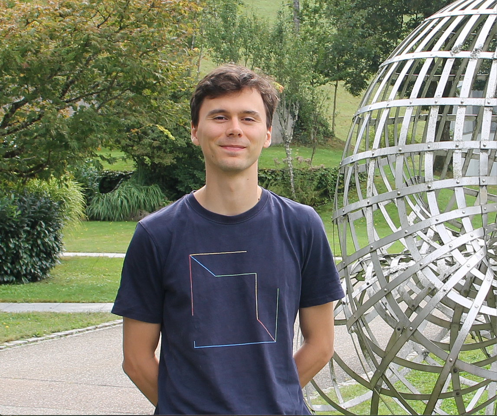

Jef Laga
Academic Website

My research focuses on the arithmetic and geometry of curves and abelian varieties. Here is my CV (updated March 2026): [pdf]
If you're a mathematician reading this, consider signing the Leiden Declaration on AI and Mathematics.
Coordinates
- Office: EL.06 in the CMS and Cripps F11c in St John's College.
- Email:
jcsl5(at)cam(dot)ac(dot)uk - Here are my arXiv papers, my MathSciNet profile and my ORCID profile.
Research articles
In reverse chronological order of arXiv submission. Note that preprints might not always include changes made before publication.
Here is a grouping of my papers by research theme:
- Polarizations, torsors and theta groups.
Preprint. (2510.24678) - Families of curves in Vinberg representations.
Preprint, joint with Beth Romano. (2508.09607, code) - Kummers, spinors and heights.
Preprint, joint with Jack Thorne. (2507.06865, code) - Lower bounds on heights of odd degree points on hyperelliptic curves.
Preprint, joint with Jack Thorne. (2507.08652) - Vanishing criteria for Ceresa cycles.
Compositio Mathematica (to appear). With Ari Shnidman. (2406.03891)
([slides] and [video] by me, and [slides] of a survey talk by A. Beauville) - 100% of odd hyperelliptic Jacobians have no rational points of small height.
Preprint, joint with Jack Thorne. (2405.10224)
([slides]) - A positive proportion of monic odd-degree hyperelliptic curves of genus g≥4 have no unexpected quadratic points.
IMRN. With Ashvin Swaminathan. (2405.09421) - Ceresa cycles of bielliptic Picard curves.
J. Reine Angew. Math. (Crelle). Joint with Ari Shnidman. (2312.12965)
([video] by Ari) - Rational torsion points on abelian surfaces with quaternionic multiplication.
Forum Math Sigma. With Ciaran Schembri, Ari Shnidman and John Voight. (2308.15193) - The geometry and arithmetic of bielliptic Picard curves.
Journal of the London Mathematical Society (to appear). With Ari Shnidman. (2308.15297) - Graded Lie algebras, compactified Jacobians and arithmetic statistics.
Journal of the European Mathematical Society. (2204.02048)
([video] and [slides] from a talk about this work.) - Arithmetic statistics of Prym surfaces.
Mathematische Annalen. (2101.07658) - The average size of the 2-Selmer group of a family of non-hyperelliptic curves of genus 3.
Algebra & Number Theory. (2008.13158)
- Arithmetic of hyperelliptic curves: 7, 8, 10, 11
- Abelian varieties: 4, 5, 13
- Algebraic cycles: 6, 9
- Arithmetic statistics via graded Lie algebras: 1, 2, 3, 12
Teaching
Outreach
In the past, I have given talks to high-school students, undergraduates from non-math backgrounds, olympiad contestants and summer school students on various aspects of number theory, geometry and pure mathematics. I am generally happy to give more such talks, especially those focused on outreach and access; please send me an email if you're interested.Reading groups
- Easter 2026 (Quantitative Uniform Mordell): [schedule]
- Fall 2022: Princeton Arithmetic Statistics learning seminar
- Michaelmas 2021 (Arakelov intersection theory on Shimura Varieties): [schedule]
- Lent-Easter 2021 (Automorphy lifting theorems): [schedule]
- Michaelmas 2020 (Mazur's torsion paper): [schedule]
- Lent-Easter 2020 (Weil II): following chapter I of this book
- Michaelmas 2019 (Average ranks of elliptic curves): following this paper
Other notes
- A note surveying some ADE classifications and connections between them, accompanying my talks ([video1] and [video2]) in Kazhdan's basic notions seminar: [pdf] (The second talk goes further than the note.)
- A note defining the analytification functor in the rigid setting, together with the example of the Tate curve: [pdf]
- Notes for a talk defining the etale homotopy type of a scheme with some examples: [pdf]
- Statement of the Bloch-Kato conjecture on special values of L-functions: [pdf]
- My Part III essay on Modular forms of weight one: [pdf]
- A simple plane curve over the p-adics with bad reduction but whose Jacobian has good reduction:
Miscellaneous
- Check out the Youtube channel Math-life balance, where Mura Yakerson interviews mathematicians in an interesting and personal way
- Bjorn Poonen has great advice on mathematical writing, speaking and being a PhD student
- I strongly support Frederico Ardila's axioms
- Check out Gender bias 101 for mathematicians